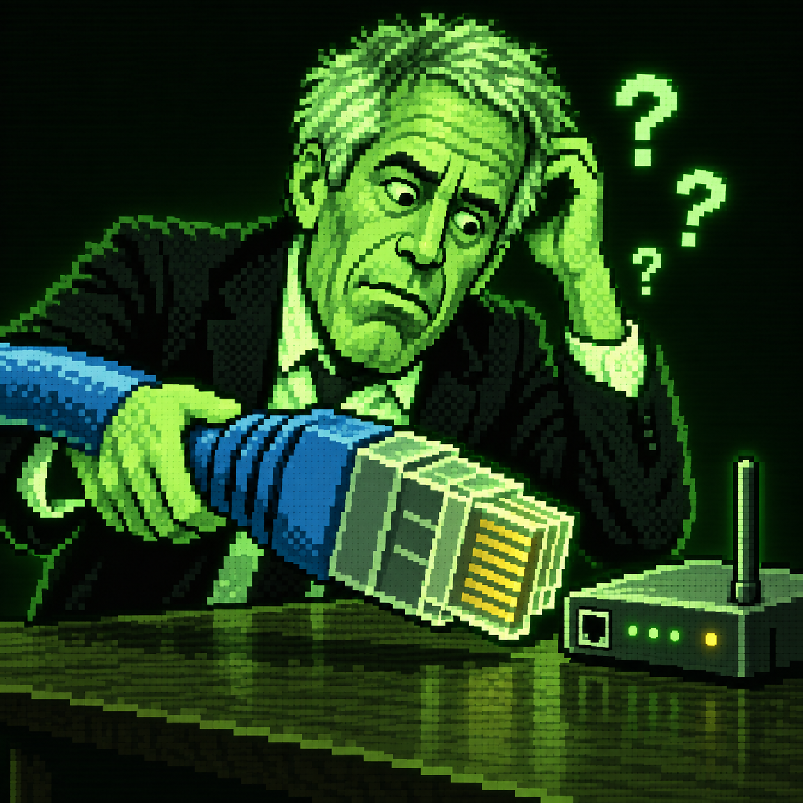

⚡ REFLEKSITESTKIIRUS
Vajuta käivitusnuppu ja siis uuesti, kui ekraan roheliseks läheb.
VALMIS?
Võidu eest saad 20 punkti.
>_ KÜBERRUUMI SIMULAATOR v. 2.04
Iga klõps viib sind sügavamale võrku. Kas suudad süsteemi üle võtta?
[00:00:01] ühenduse loomine...
[ OK ] tulemüürist möödutud
[00:00:03] ootan sinu käsku_
TÖÖRIISTAKAST
Vajuta käivitusnuppu ja siis uuesti, kui ekraan roheliseks läheb.
Jäta värvide jada meelde ja korda seda õiges järjekorras.
PEIDETUD FAIL / LEITUD
Jeffrey Epstein oli USA rahastaja ja süüdimõistetud seksuaalkurjategija. 2019. aastal esitati talle alaealiste seksikaubanduse süüdistus; ta suri enne kohtuprotsessi. Järgnev galerii on absurdselt väljamõeldud AI-paroodia, mitte päris fotod ega päris sündmused.

Kuidas mängida?
Klõpsa nupul või vajuta klaviatuuril tühik. Osta uuendusi ja proovi minimänge!